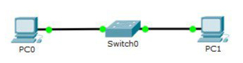

<nav role='navigation'>
  <ul>
    <li><a href="index.html">ГЛАВНАЯ</a></li>
    <li><a href="1.html">ЛАБОРАТОРНАЯ РАБОТА 1</a></li>
    <li><a href="2.html">ЛАБОРАТОРНАЯ РАБОТА 2</a></li>
    <li><a href="3.html">ЛАБОРАТОРНАЯ РАБОТА 3</a></li>
    <li><a href="4.html">ЭКЗАМЕНАЦИОННЫЙ ВОПРОС</a></li>
      
  </ul>
    <div class="divmain">
    <h1>НАСТРОЙКА ЛОКАЛЬНОЙ СЕТИ ПЕРЕДАЧИ ДАННЫХ</h1>
    <h2>Цель работы: Ознакомиться с принципами работы компьютерных сетей, базовой настройкой сетевого оборудования и статической маршрузитацией</h2><br>
    <h3>Требования к приложению:</h3>
    <h3 class="ot">1. Рассчитать IP-адрес</h3> 
    <h3 class="ot">2. Настроить адресацию между двумя узлами и коммутатором</h3>
    <h3 class="ot">3. Добавить оборудование и произвести настройку </h3>
    <h3 class="ot">4. Настроить статическую маршрутизацию при помощи команды: ip route [сеть назначения] [маска] [маршрут]</h3>
    <h3 class="ot">5. Установить банер на сетевое оборудование: banner motd [баннер]</h3><br>
    <p class=image1></p> 
    <p class=image2></p> 
    <h2>Вывод</h2>
    <h3>В ходе выполнения работы была проведена базовая настройка сетевого оборудования</h3> 
    </div>
</nav>  
<head>
  <link href="css.css" rel="stylesheet">
</head>
